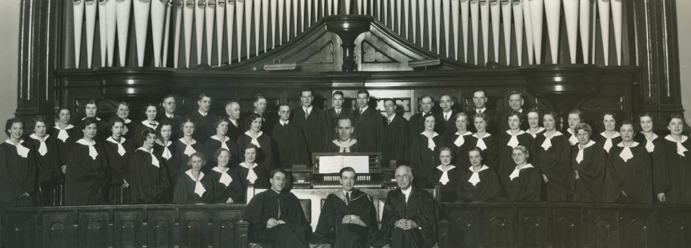

-1-MasterItem.svg)
Stories of Westminster United Church & its People / Page
152
When Herb started, the choir numbered 25 singers including the quartet. Over the
period of his
leadership by 1934 the choir numbered 50 members with a waiting list.The writer,
who joined the
choir in 1951 remembers a membership of nearly 50. That number could be
accommodated while
we were sitting. But when we stood to sing we had to turn sideways with our
music held close
to our faces to accommodate the squeeze.
Herb’s memoire of the choir (written in 1937) paints a picture of a busy and
dedicated group of
choristers who’s activities we will get to in a minute. But first we note that the choir loft
originally
had pews for seating. On one evening … “in the midst of one of his (Dr. Christie’s) truly beautiful
extempore prayers at a Sunday evening service everything was in perfect
quietness save only for
Dr. Christie’s rich voice. Suddenly, unmistakeable signs of distress were apparent on the
faces of
the soprano section, and a series of short cracking sounds emanated from their
vicinity. The seat
of their pew was giving way and there appeared the imminent prospect of the
soprano line
disappearing behind the front partition …” At a later date, as the choir grew in number,
the pews were removed and were replaced by chairs.
The choir in 1934 (Rev. Bonnell’s portrait in the centre).
Table
of Contents
Music at Westminster
